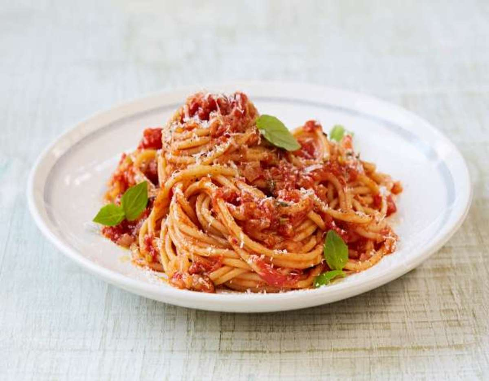

Espaguetis con salsa de tomate y albahaca
Ingredientes:
- 500 gramos de espaguetis
- 800 gramos de tomates maduros
- 4 dientes de ajo
- 1 cebolla
- 1 manojo de albahaca fresca
- 4 cucharadas de aceite de oliva
- Sal y pimienta al gusto
- Queso parmesano rallado (opcional)
- Cocer los espaguetis según las instrucciones del paquete en agua con sal hasta que estén al dente.
- Pelar y picar los tomates en cubos pequeños.
- Pelar y picar los dientes de ajo y la cebolla.
- Calentar el aceite de oliva en una sartén grande a fuego medio.
- Agregar el ajo y la cebolla a la sartén y cocinar hasta que estén dorados.
- Agregar los tomates y la mitad de la albahaca picada a la sartén. Mezclar bien y cocinar a fuego medio-bajo durante unos 10-15 minutos, hasta que los tomates se hayan deshecho y la salsa tenga una consistencia suave y espesa.
- Añadir sal y pimienta al gusto.
- Agregar los espaguetis cocidos a la sartén con la salsa y mezclar bien para cubrir toda la pasta con la salsa.
- Servir los espaguetis con la salsa de tomate y albahaca, y decorar con el resto de la albahaca picada y queso parmesano rallado (opcional).
Esta receta es muy fácil de hacer y es una excelente opción para una cena rápida durante la semana.
Puedes agregar algunos vegetales como pimientos o champiñones para hacerlo aún más nutritivo. ¡Disfrútalo!